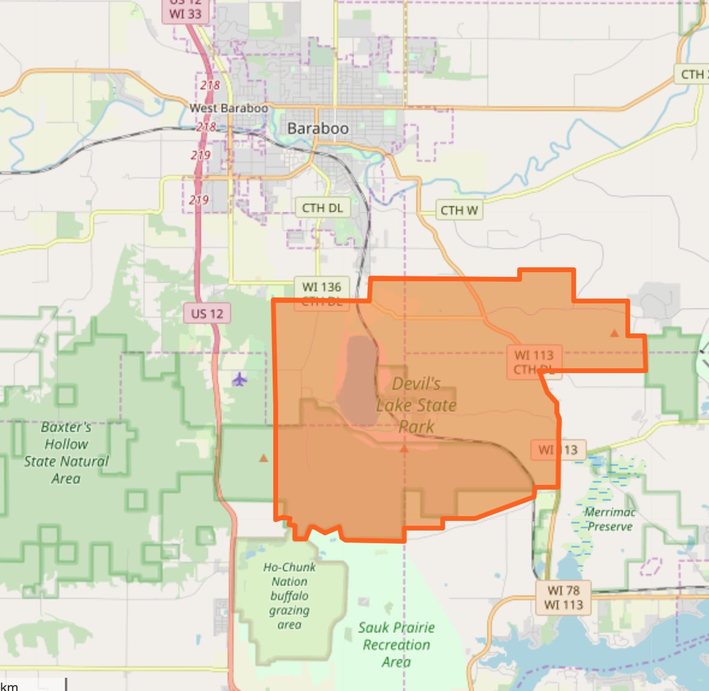

I chose Devil's Lake State Park in Baraboo, Wisconsin, because it was a large park of my childhood and one of the most beautiful state parks I have ever visited.

https://www.openstreetmap.org/way/26279409